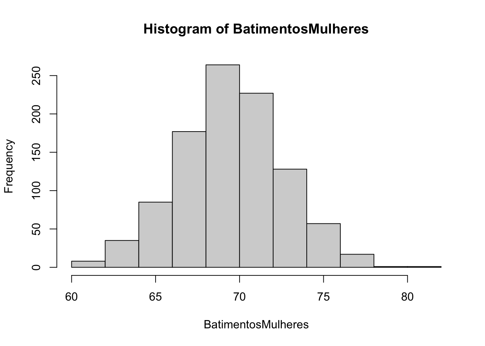
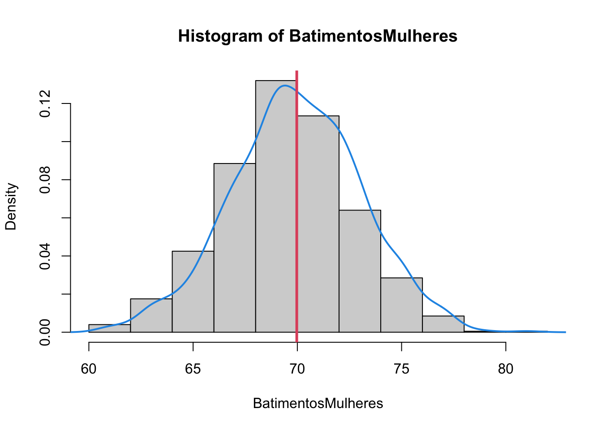
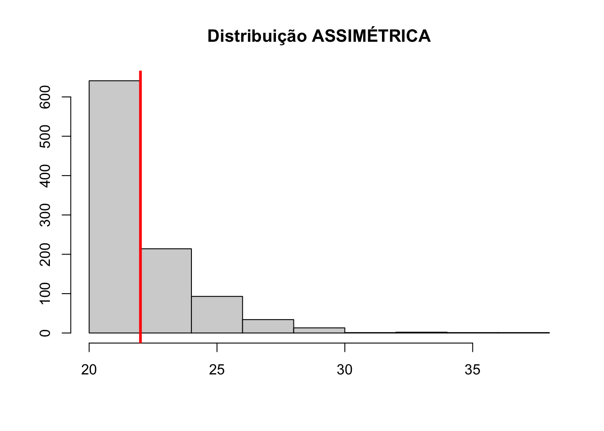

Capítulo 14 Distribuição de Probabilidade
Uma distribuição de probabilidade é um modelo matemático que descreve a relação entre os valores possíveis de uma variável e as probabilidades de ocorrência desses valores. Essencialmente, ela nos permite prever a probabilidade de eventos com base em um conjunto de dados.
Entre as distribuições mais comuns, destacam-se:
- Distribuição Normal (ou Gaussiana)
- Distribuição Binomial
- Distribuição Poisson
- Distribuição Exponencial
- Distribuição Uniforme
- Distribuição Qui-quadrado
- Distribuição t-Student
- Distribuição Gama, entre outras.
Cada tipo de distribuição possui características próprias e é aplicada em diferentes contextos. A distribuição normal é uma das mais amplamente utilizadas, especialmente para modelar fenômenos naturais e sociais, como a altura de indivíduos ou o tempo de vida de produtos.
Propriedades Gerais das Distribuições de Probabilidade
- Área total sob a curva é igual a 1: Isso significa que a soma de todas as probabilidades possíveis de ocorrência dos eventos é igual a 100%.
- A área sob a curva representa a probabilidade de um evento. Por exemplo, a probabilidade de um evento ocorrer entre dois valores quaisquer pode ser calculada pela área sob a curva entre esses dois pontos.
14.1 Distribuição Normal
A distribuição normal é uma das mais conhecidas na estatística. Ela modela fenômenos que seguem um comportamento simétrico em torno de uma média. A distribuição normal tem várias aplicações, desde a análise de medidas biológicas (como a pressão arterial) até a previsão de fenômenos econômicos (como o preço das ações).
A distribuição normal é definida por dois parâmetros principais:
- Média (μ): Representa o valor central da distribuição.
- Desvio Padrão (σ): Mede a dispersão dos dados em relação à média.
Características da Distribuição Normal
- Forma de sino: A distribuição normal tem a forma de um sino simétrico, com a maior concentração de dados perto da média.
- Simetria: A distribuição é simétrica em relação à média.
- Média, Mediana e Moda: Para uma distribuição normal, a média, mediana e moda são “iguais” e localizam-se no centro da distribuição.
Teoricamente o comportamento da Distribuição Normal é dado por:
{kind=link}
Onde:
- A média está representada por \(\mu\)
- O devio padrão está representado por \(\sigma\)
Regra empirica 68% - 95% - 99,7% Se os dados seguem uma distribuição normal, é possível fazer afirmações sobre a concentração dos dados em torno da média, conforme a regra empírica:
- 68% dos dados estão no intervalo de uma vez o desvio padrão (μ ± 1σ).
- 95% dos dados estão no intervalo de duas vezes o desvio padrão (μ ± 2σ).
- 99,7% dos dados estão no intervalo de três vezes o desvio padrão (μ ± 3σ).
Importante: Dados fora do intervalo de μ ± 3σ são considerados raros.
Exemplo de distribuição Normal, com dados simulados usado a função rnorm().
# semente de geração de números aleatórios
set.seed(1)
# Será simulada uma amostra com a seguinte característica:
# 1000 valores
# média ~ 70
# desvio padrão ~ 3
# A função rnorm() gera números randômicos com comportamento de uma distribuição Normal
BatimentosMulheres <- rnorm(1000, 70, 3)
# Arrendodamento com nenhuma casa depois da vírugula
BatimentosMulheres <- round(BatimentosMulheres,0)
# histograma
hist(BatimentosMulheres)
## [1] 60 62 64 66 68 70 72 74 76 78 80 82## [1] 8 35 85 177 264 227 128 57 17 1 1# histograma e curva de densidade (da Dist. Normal)
hist(BatimentosMulheres, prob = TRUE)
lines(density(BatimentosMulheres), col = 4, lwd = 2)
# idicação da média
abline(v = mean(BatimentosMulheres), col = 2, lwd = 3)
## Min. 1st Qu. Median Mean 3rd Qu. Max.
## 61.00 68.00 70.00 69.97 72.00 81.00## BatimentosMulheres
## 69 70 71 72 68 67 73 66 74 75 65 64 63 76 77 61 62 78 79 81
## 138 126 116 111 95 82 82 56 46 41 29 18 17 16 15 4 4 2 1 1## [1] 3.10594## [1] 4.438833As funções pnorm() e dnorm() são usadas para calcular a probabilidade de um evento que segue uma distribuição, a qual conhecemos a média e o desvio padrão.
Exemplo: Sabendo que os batimentos cardíacos de mulheres de 18 a 65 anos tem média de 70bmp e desvio padrão igual a 3bmp.
Calcule as probabilidades:
- de uma mulher ter batimentos inferior a 70bmp, ou seja, \(P(x<70)\):
# pnorm(): Calcula a probabilidade acumulada até um valor específico. Ou seja, retorna a probabilidade de que uma variável aleatória, que segue uma distribuição normal, seja menor ou igual a um determinado valor.
# observação: a resposta é 0.5 pois a média 70.
pnorm(70, 70, 3)## [1] 0.5- de uma mulher ter batimentos superior a 70bmp, ou seja, \(P(x>70)\):
## [1] 0.5- de uma mulher ter batimentos igual a 70bmp, ou seja, \(P(x=70)\):
# dnorm(): Calcula a densidade de probabilidade de um valor específico em uma distribuição normal. Em outras palavras, ela retorna o valor da função densidade de probabilidade no ponto especificado.
dnorm(70, 70, 3)## [1] 0.1329808- de uma mulher ter batimentos entre 67 e 73bmp \(P(67 < x < 73)\):
## [1] 0.6826895- de uma mulher ter batimentos entre 67 e 73bmp \(P(64 < x < 76)\):
## [1] 0.9544997- de uma mulher ter batimentos entre 61 e 79bmp \(P(61 < x < 79)\):
## [1] 0.9973002- de uma mulher ter batimentos maior que 90bmp \(P(x > 90)\):
## [1] 1.308398e-11- de uma mulher ter batimentos menor que 65bmp \(P(x < 65)\):
## [1] 0.0477903514.2 Gráfico QQ
Uma maneira comum de verificar a normalidade de uma distribuição é utilizando o gráfico QQ. Ele compara os quantis de uma amostra com os quantis de uma distribuição normal padrão, e é muito útil para identificar se os dados seguem uma distribuição normal.
Distribuição Normal Padrão
A distribuição normal padrão tem duas características importantes:
- Média (μ) igual a 0
- Desvio padrão (σ) igual a 1
Cálculo do Escore Z
Qualquer distribuição normal pode ser transformada na distribuição normal padrão utilizando o escore Z. O escore Z é calculado pela fórmula:
\[ z = \frac{(x - \mu)}{\sigma} \]
Onde:
- \(x\) é o valor da observação.
- \(\mu\) é a média da distribuição.
- \(\sigma\) é o desvio padrão da distribuição.
O gráfico QQ realiza exatamente o que a fórmula do escore Z descreve: ele transforma os dados da amostra para a distribuição normal padrão (média 0 e desvio padrão 1) e então compara esses valores transformados com os quantis da distribuição normal teórica. Se os pontos formarem uma linha reta, isso sugere que os dados seguem uma distribuição normal.
Veja um exemplo no R para uma Distribuição Normal Padrão:
set.seed(1)
# rnorm(10000, 0, 1): normal padrão média 0, dp=1
# ou simplesmente rnorm(10000)
NormalPadrao <- rnorm(10000)
hist(NormalPadrao, probability = T)
lines(density(NormalPadrao), col = 4, lwd = 2)
axis(side = 1, at = seq(-3, 3, by = 1), labels = seq(-3, 3, by = 1))
abline(v = mean(NormalPadrao), col = 2, lwd = 3)
No gráfico QQ, os quantis da amostra são comparados com os quantis da distribuição normal padrão. Se a amostra segue uma distribuição normal, os pontos no gráfico QQ devem se alinhar aproximadamente a uma linha reta.
Se os pontos se afastam dessa linha reta de forma sistemática, isso indica que os dados não seguem uma distribuição normal. O tipo de desvio pode dar pistas sobre a natureza dessa não-normalidade (por exemplo, se os pontos se curvam para cima ou para baixo, pode indicar assimetria ou caudas pesadas).
Distrbuição normal é usada para dados contínuos!
# Gráfico QQ
set.seed(1)
BatimentosMulheres <- rnorm(1000, 70, 3)
qqnorm(BatimentosMulheres)
qqline(BatimentosMulheres, col="red")
# Faça o arredondamento
BatimentosMulheresR <- round(BatimentosMulheres,0)
qqnorm(BatimentosMulheresR)
qqline(BatimentosMulheresR)
A distribuição Normal é uma distribuição para modelar variáveis CONTÍNUAS!